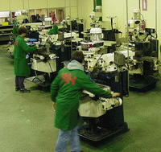
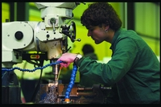
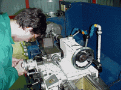

Caso práctico
{kind=link}
_mini.gif "Jacinto - Jefe de taller") APARDOA es una empresa dedicada al mecanizado de piezas unitarias. Sus clientes son empresas que necesitan mecanizar prototipos y pequeñas modificaciones de piezas ya mecanizadas, también dan servicio a empresas del sector de maquinaría que precisan piezas para repuesto de componentes y para sustituir piezas rotas, sobretodo en máquinas-herramientas descatalogadas o cuyo fabricante cerró su actividad hace años.
APARDOA es una empresa dedicada al mecanizado de piezas unitarias. Sus clientes son empresas que necesitan mecanizar prototipos y pequeñas modificaciones de piezas ya mecanizadas, también dan servicio a empresas del sector de maquinaría que precisan piezas para repuesto de componentes y para sustituir piezas rotas, sobretodo en máquinas-herramientas descatalogadas o cuyo fabricante cerró su actividad hace años.APARDOA dispone para su actividad de maquinas convencionales; su sección de tornos se compone de 3 tornos de diferentes capacidades, la sección de fresadoras es la más anticuada, dispone de 3 fresadoras - punteadora ya obsoletas y una fresadora de Cabezal universal en buen uso. Para el rectificado hay una planeadora y otra rectificadora cilíndrica, que cumplen su cometido sobradamente.
 En taller de APARDOA trabajan un equipo formado por:
En taller de APARDOA trabajan un equipo formado por: Manu y Toño entraron hace 3 años al taller como operarios al terminar la formación profesional. Ambos trabajan con autonomía tanto en torno como fresadora convencionales.
Rosa acaba de incorporarse a la empresa; tiene estudios administrativos pero durante 2 años ha estado más tiempo en el paro que trabajando, al contrario que su novio que tras obtener el graduado escolar entro en un taller mecánico y no conoce el paro.
Jacinto reúne al equipo para plantear los cambios de modernización del taller. Tras revisar pros y contras la dirección de APARDOA decide invertir en la adquisición de maquinas dotadas de Control Numérico. Por ello se plantea la adquisición de nuevas competencias en programación CNC.
